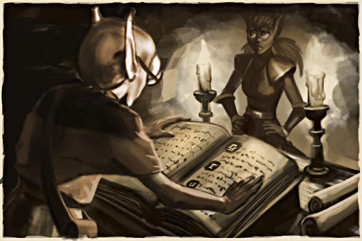

")
The Chasm of Lights, Part II

 he ledge sloped upwards, in one place becoming so steep that Zanik had to climb with her hands. The floating lights sometimes hovered close and she wondered if they were aware of her presence; she tried to attract them by waving her torch, but they did not seem interested. She eventually came to another opening in the wall, this one a tunnel leading steeply upwards. The tunnel was nowhere near as long as the river channel. As Zanik had expected, it ended in a barrier of long bones held together by iron pins. She braced herself against the rock and kicked it open.
he ledge sloped upwards, in one place becoming so steep that Zanik had to climb with her hands. The floating lights sometimes hovered close and she wondered if they were aware of her presence; she tried to attract them by waving her torch, but they did not seem interested. She eventually came to another opening in the wall, this one a tunnel leading steeply upwards. The tunnel was nowhere near as long as the river channel. As Zanik had expected, it ended in a barrier of long bones held together by iron pins. She braced herself against the rock and kicked it open.
The tunnel emerged into a mossy cave with an algae-filled river running across it. A pair of giant frogs lumbered nearby, but Zanik knew how to tread lightly and not look edible. She recognised the place quickly; she had passed this barrier dozens of times but had always assumed that it warned of an unstable tunnel section or some other mundane hazard. She hopped across the river and started back towards the city.
Her path took her through the abandoned mines and past the place where the earthquake had happened. Two city guards were standing there, dressed in iron chainmail and leaning on their spears. She couldn't see Dorgan.
The guards spotted her, and one of them ran over. “Zanik?”
Zanik grinned.
“Where have you been? Mernik is worried sick. Do you have any idea how long you've been gone?”
The guard practically manhandled her back to the city. She tried to tell him about the chasm and the floating lights and Juna, but he just scolded her for making up stories. By the time they reached the great iron door and passed through into the familiar bustle of the city, she had retreated into a sullen silence.
The city lights were dimming for the evening. Mernik and Dorgan were standing outside the door to the nursery complex. Mernik looked even older and more lined than ever, but only for a moment; as soon as she saw Zanik, she broke into a smile. She hugged Zanik close as if trying to lift her off her feet, although it had been many years since Zanik had been small enough for that.
Everyone knew that Mernik was one of the most important people in the city, although she had no pompous title like the members of the council. She was the head of the nursery complex, both mother and tutor to a whole generation. Zanik had no idea who her birth-parents were, and she would have been astonished at the suggestion that she might want to know. Like all city-dwellers, she had been raised in the communal nursery by a legion of nursemaids and teachers, with Mernik a strict but loving presence at the top of it all.
“Thank the city you're safe,” Mernik said, releasing Zanik at last. “Now get inside and clean yourself up. You look exhausted.”
Zanik was tired, and Mernik's hug had made her ache all over. Mernik went inside, leaving the door open.
The guard had also gone, leaving Zanik and Dorgan alone. Dorgan edged towards her. “I'm glad you're safe,” he said.
Zanik grinned. “Not as glad as I am!”
Dorgan returned Zanik's smile for a moment, but then looked down at his hands, which he was kneading together in little nervous motions. “You shouldn't have gone off like that,” he said quietly, with a resentful tone competing with the nervousness in his voice. “I was worried.”
“I didn't mean for you to worry. I was going to come back, but then I found this chasm, and there were these lights, and this creature, and it talked. You wouldn't believe it! Tomorrow I'll show it to you.”
“No!” Dorgan reached for Zanik's hand; reflexively, she pulled away. His eyes were stretched even larger than normal with a look of frightened pleading. She had seen a hint of that expression on the faces of many of the grown-ups: a faint, subdued panic, as if the slightest misstep could lead to untold danger. Suddenly she couldn't imagine why she had ever found Dorgan attractive.
“Don't go there again, Zanik,” Dorgan continued. “Promise me you won't go off exploring again. Stay in the city and be safe with me.”
The nursery complex was above the city's ground level; from here Zanik could see out across the cavern. On the main floor below, hundreds of city-dwellers walked among the statues and waterways and chaotic market stalls. Beyond them, the façades of shops and houses rose tier upon tier up the far wall of the cavern. Pillars and arches stretched from the ground to the ceiling, just visible by the hundreds of light orbs running along every wall and walkway. Somehow it all seemed smaller than it had yesterday.
“I can't promise that,” said Zanik. “I'm sorry.”
She went inside and left Dorgan to his city.
he next morning Zanik's class had a lecture from the city scribe. She tried to tell her friends about the previous day's adventure, but those who believed her at all were just like Dorgan: shocked that she had put herself in danger. When the lecture started she sat towards the back, pretending to pay attention while she made a sketch of Juna and the floating lights on her writing slate. Stone tablets in the city's store rooms stored the minutes of City Council meetings for the last eight hundred years, the little bespectacled man was explaining. Of course, the Council had existed far longer than that, he went on, but records were patchier and less reliable. Up on the blackboard was a key to the complex formal notation in which the minutes were kept. Zanik could hardly have been more bored.
Eventually it came to an end and the class filed out. Zanik would normally have been the first out, but this time she stayed in her seat as the scribe wiped the board. Dorgan hung in the doorway for a moment, but then looked at his feet and disappeared.
The scribe turned from the board and blinked at Zanik through his glasses, as if he couldn't believe she was still there. “You have a question? Uh, Zendak, wasn't it?”
“Zanik.”
“Yes, of course. If you want to know more about the Council notation, I have several books that you could borrow.”
“I'm not interested in the notation.” Zanik resisted the urge to put it in stronger terms.
The scribe slid his notes into a little bag and clicked it shut neatly. “Then what can I do for you?”
“Tell me about Juna, and the chasm of the floating lights.”
The scribe looked puzzled. “I believe I may have read something about that. Would you come to my study so I can look it up?”
The scribe's study was an annexe of the Council Chamber, and busts of long-dead council members looked down on them as he leafed through his notes. After much looking up of indexes, cross-referencing, and noting down of page numbers, he pulled a dusty volume from a shelf and opened it out on his little work-table. Zanik peered at the book but the writing was tiny, and most of it was in the arcane council notation. “What does it say?”
The scribe traced his finger across the page. “Extraordinary Council meeting to hear Exploratory Division report, Ur-golt presiding ... year of the city ... well, it's about three hundred years ago. Exploration of collapsed area revealed new tunnel leading to large chasm. Unknown optical phenomenon resembling living creatures of light. Creatures were attracted to blue-tinted lanterns. Creatures seemed insubstantial but were able to pick up objects; one of them carried a blue lantern away across the chasm. Division also encountered a large worm-like creature that spoke to them. Demonstrated great physical power and threatened to throw Division into the chasm if they did not leave. Exploratory Division of the opinion that the chasm and its inhabitants are dangerous. Council resolves to block up tunnel to chasm and erect signs designating it off-limits to all.”
“That's it?” asked Zanik. “They didn't send another expedition?”
“No. If they had there would be a note here. Elgon was very thorough in his cross-referencing.”
“They just blocked it off,” said Zanik in disgust. “So when were you going to tell us about it?”
“What do you mean?”
“When were you going to put it in your lectures?” Zanik waved her hand in inarticulate anger. “You've told us about the backup power station and the rules for the market traders and...and the stupid codes you use to write the council minutes! Why haven't you done a lecture on this?”
The scribe was fumbling with his pen anxiously. His face showed the same nervous look that Zanik had seen on Dorgan the night before, and she wondered contemptuously whether he had ever gone outside the city gates. “There are lots of details in the history we don't include in lessons,” he said. “We have to narrow it down to what's important.”
“Important?” shouted Zanik. “There are lights that shine on their own, when you told us only we can make light! There's a talking animal, when you told us only we can talk! How is this not important? What else is there that you're not telling us?”
“Zanik, I don't know what you want to know. That chasm isn't important. It's a curiosity, nothing more.”
“Yes, it's a curiosity! So why is no one curious about it?”
Zanik stormed out as stormily as she could.
Click here to view 'The Chasm of Lights, Part III' Click here to view the Chosen Commander quest page.
More articles in
Lores and Histories
|
|